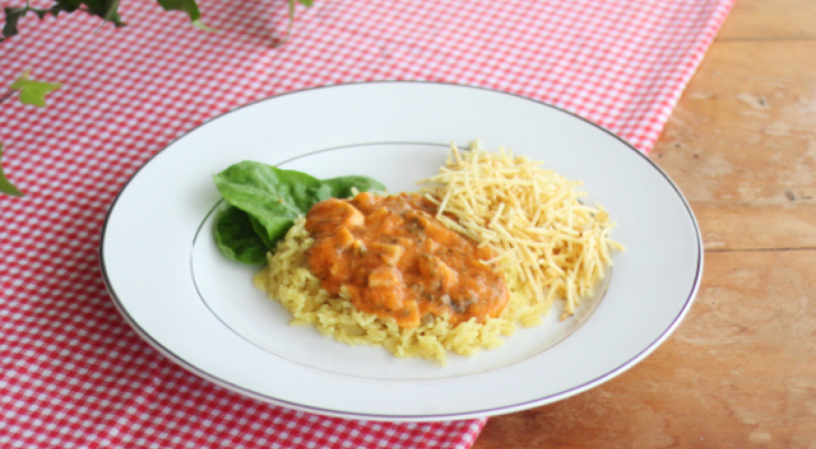

Receitas salgadas
Strogonoff de palmito vegano

4 porções30 min
- 1 xícara de chá de aveia em flocos finos
- 2 xícaras de chá de água
- 4 dentes de alho picados
- 1/2 xícara de chá de cebola picada
- 300 gramas de palmito fatiado
- 100 gramas de cogumelos champignon fatiados
- 2 xícaras de chá de molho de tomate
- 1/2 xícara de chá de água
- 2 colheres de sopa de mostarda amarela
- 1 xícara de chá de salsinha picada
- Sal a gosto
Lista de ingredientes
- Reúna todos os ingredientes;
- Coloque a aveia e a água no liquidificador e deixe de molho por meia hora; depois, bata por um minuto, coe e reserve;
- Coloque um fio de óleo em uma panela, leve-a ao fogo médio e refogue o alho e a cebola até ficarem levemente dourados; em seguida, acrescente o palmito, o champignon, tempere-os com sal e refogue-os;
- Junte o molho de tomate, a água, a mostarda e misture. Corrija o sal, se necessário, abaixe o fogo e deixe os ingredientes cozinharem por mais 5 minutos;
- Acrescente o leite de aveia (feito no liquidificador) e misture;
- Adicione a salsinha picada, misture, desligue o fogo e sirva.